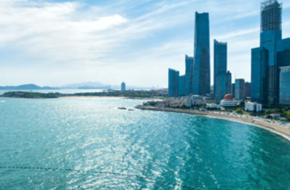
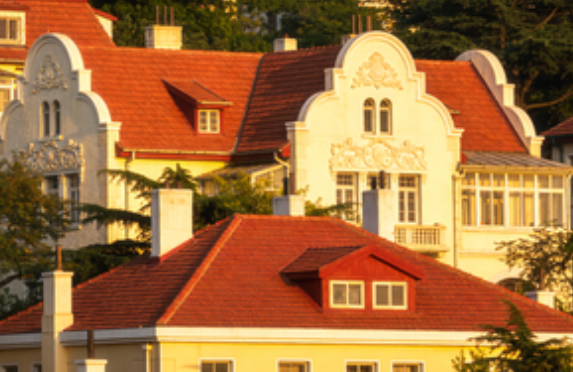

Sailing City of China
Qingdao is a beautiful coastal city located in the eastern part of Shandong Province, China. Known for its stunning sea views, rich cultural heritage, and world-famous Tsingtao Beer, the city has become one of the most popular tourist destinations in northern China.
With a history spanning over a century of international influence, Qingdao offers a unique blend of Eastern and Western cultures, creating an atmosphere unlike anywhere else in China.
Ocean & Beaches
Over 860 kilometers of coastline with pristine beaches and crystal-clear waters
Tsingtao Beer
Home of the world-renowned Tsingtao Brewery since 1903
European Heritage
Exquisite German colonial architecture and charming old town streets

Geography & Climate
Qingdao is located on the southern coast of the Shandong Peninsula, facing the Yellow Sea. The city covers an area of 11,282 square kilometers with a population of over 10 million. It enjoys a temperate monsoon climate with cool, humid summers and mild winters, making it one of China's most livable cities. The average summer temperature is around 25 degrees Celsius, while winter averages just above freezing.

History & Heritage
Qingdao's modern history began in 1891 when the Qing Dynasty established a naval base here. The city was under German colonial rule from 1897 to 1914, followed by Japanese occupation. This complex history left behind a remarkable architectural legacy, with the Badaguan area preserving over 200 European-style buildings. In 2008, Qingdao hosted the sailing events for the Beijing Olympics, cementing its status as an international destination.
Transportation & Travel
Qingdao is well-connected by air, rail, and sea. Qingdao Jiaodong International Airport offers direct flights to major cities worldwide. The city is linked to Beijing and Shanghai by high-speed rail, with travel times of approximately 3 and 4 hours respectively. Within the city, an extensive metro system, bus network, and taxi services make getting around convenient.
Best Time to Visit
The ideal time to visit Qingdao is from June to September during the summer season. July and August are peak months, coinciding with the International Beer Festival and the beach season. Spring (April to May) offers pleasant weather and blooming cherry blossoms, while autumn (October to November) provides comfortable temperatures and stunning foliage at Mount Lao.